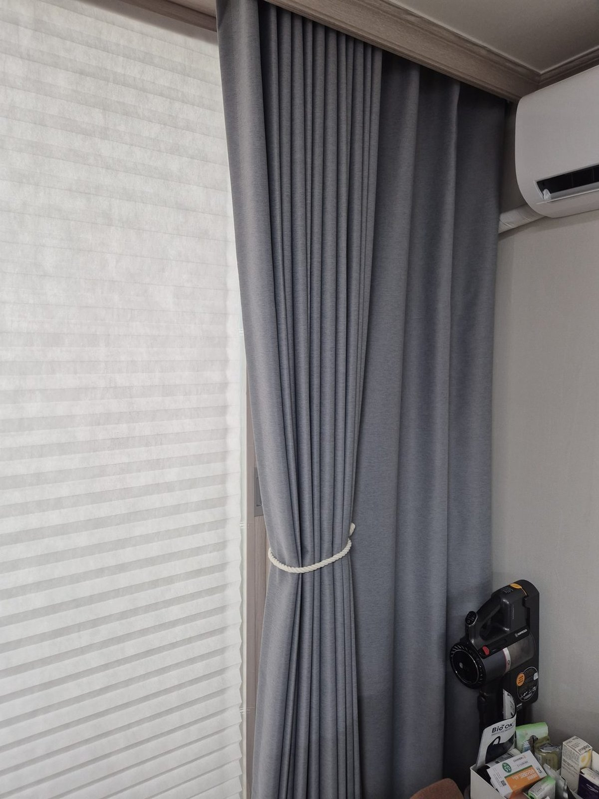
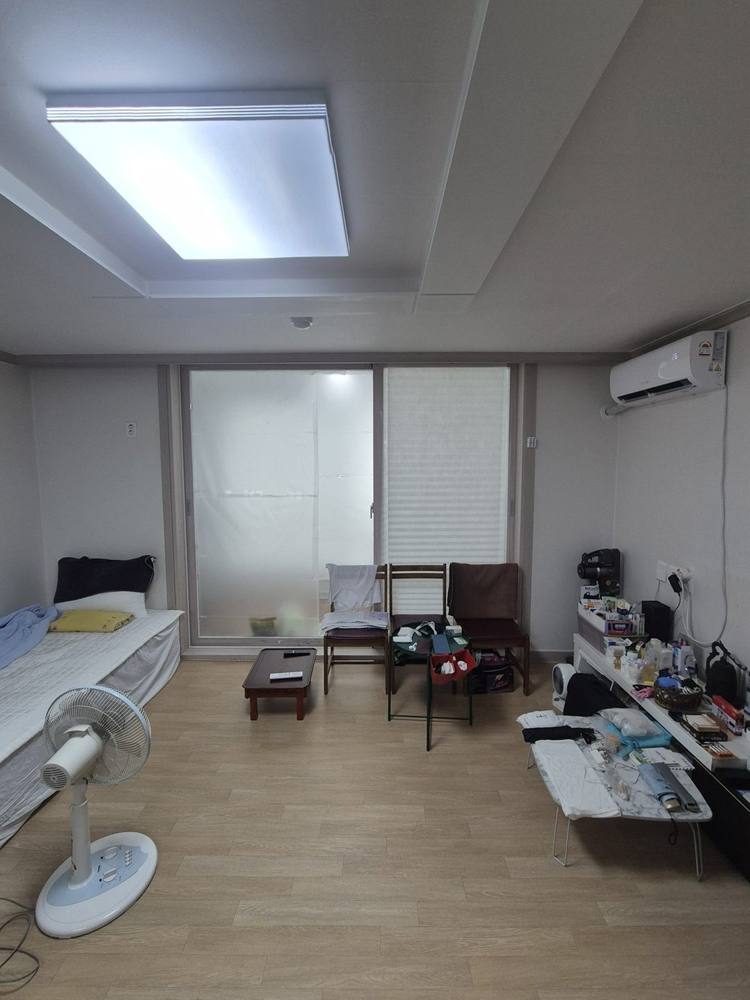
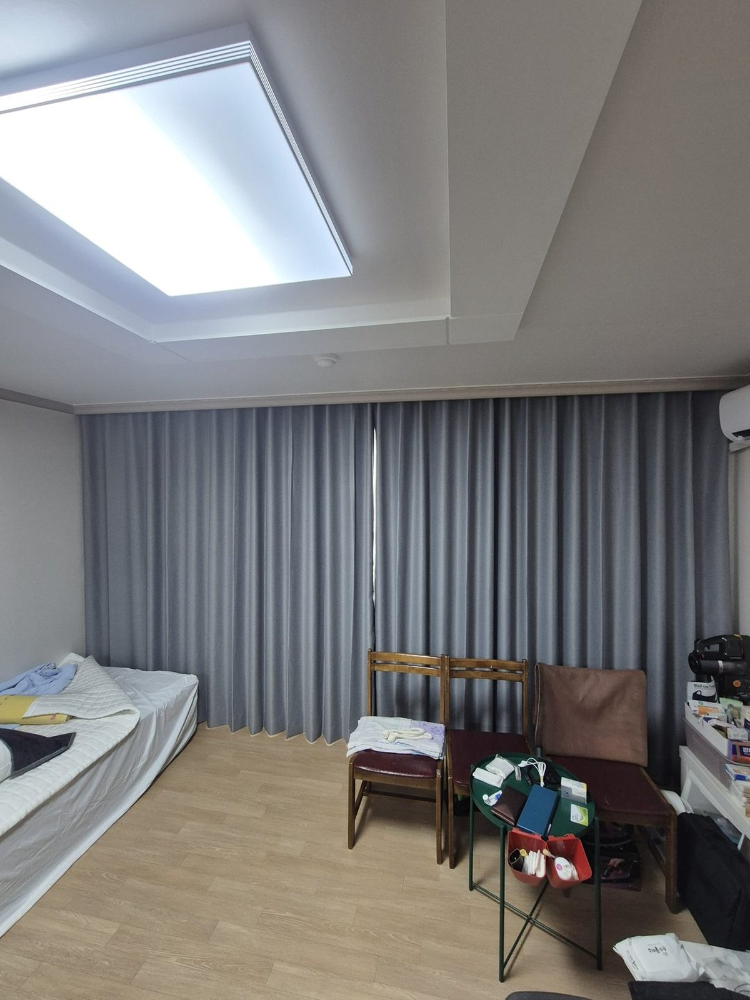
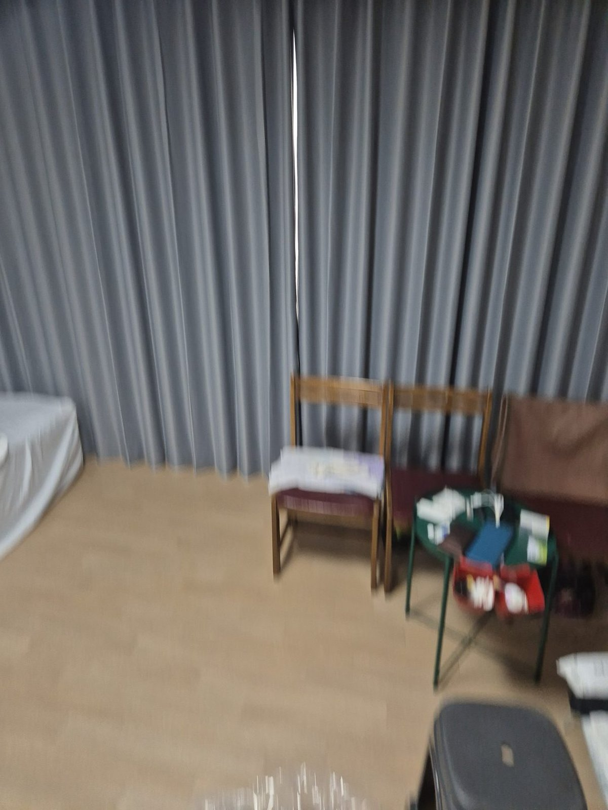
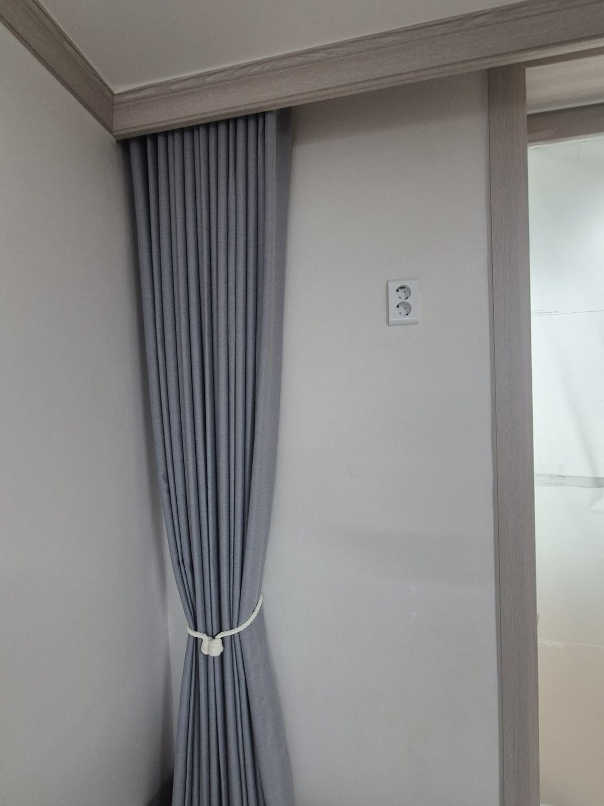
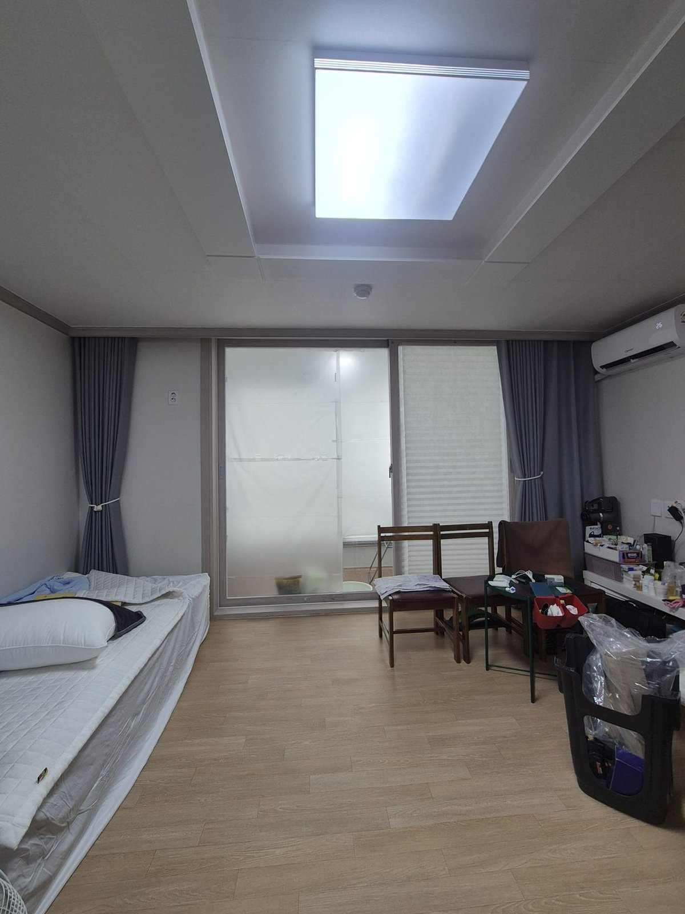

2026년 7월 22일 시공
영주 화성리버빌 거실
그레이 암막커튼 시공후기

부모님이 혼자 계신 집, 여름 볕이 얼마나 뜨겁게 들어오는지 멀리 살면 잘 보이지 않습니다.
이번 연락도 그렇게 시작됐습니다.
타지역에 사는 아드님이 "아버지 혼자 계신 거실에 해가 너무 강하게 든다"며 전화를 주셨어요.
낮 동안 실내 온도가 올라가는 게 마음에 걸리셨던 겁니다.
안녕하세요, 영주를 포함한 경북 전 지역 커튼·블라인드 출장 시공 따솜커튼블라인드입니다.
영주 담당 이실장이 화성리버빌 아파트 가정집 거실에 그레이 암막커튼을 달아드리고 온 이야기를 정리해봅니다.
멀리 사는 아들의 전화로 시작된 시공
아드님은 아버님과 떨어져 지내다 보니, 오래 머무르며 챙겨드리기가 쉽지 않다고 하셨어요.
그래도 여름만큼은 시원하게 지내셨으면 하는 마음에 커튼부터 알아보신 거였습니다.
요청은 분명했어요.
강한 볕을 확실히 가려서 실내 온도를 잡아달라는 것.

거실 창에는 이미 화이트 콤비블라인드가 달려 있었습니다.
빛을 은은하게 조절하기엔 좋지만, 한여름 정오의 직사광과 열기까지 막기에는 부족했죠.
콤비블라인드는 그대로, 위에 그레이 암막을 더했습니다
기존 콤비블라인드를 떼어내지 않았습니다.
멀쩡한 블라인드를 버릴 이유가 없었고, 오히려 두 겹으로 쓰면 낮의 빛 조절과 한낮의 완전 차광을 상황에 맞게 골라 쓸 수 있으니까요.

그래서 콤비블라인드 위에 그레이 암막커튼을 이중으로 시공했습니다.
평소엔 콤비블라인드로 은은하게, 볕이 강한 시간대엔 암막커튼을 쳐서 빛과 열을 함께 막는 구성입니다.
암막커튼은 직사광을 차단하면서 실내로 넘어오는 열기까지 줄여줘서, 여름 실내 온도 관리에 실제로 도움이 됩니다.

색은 그레이로 잡았습니다.
화이트 콤비블라인드와 톤이 자연스럽게 이어지면서도, 거실에 차분한 무게감을 더해줍니다.
혼자 계신 아버님이 편히 쉬시는 공간이라, 튀지 않고 안정감 있는 색이 맞다고 봤어요.
걷었을 때도 단정하게 — 타이백 마무리
암막커튼은 늘 쳐두는 게 아니라 걷어두는 시간이 더 깁니다.
그래서 걷었을 때 지저분해 보이지 않도록 타이백(끈)으로 깔끔하게 묶어 정리했어요.

커튼을 한쪽으로 모아 묶어두면 창밖도 시원하게 열리고, 거실도 넓어 보입니다.
혼자 지내시는 분께는 여닫기가 번거롭지 않고 단정하게 유지되는 게 중요합니다.
타이백 위치와 높이도 어르신이 쓰기 편한 선으로 맞춰드렸습니다.

자주 묻는 질문
Q. 영주도 출장 시공 되나요?
네, 영주는 이실장이 직접 방문 시공합니다. 화성리버빌처럼 아파트 가정집은 물론 단독주택, 상가도 가능합니다.
Q. 기존 블라인드가 있어도 커튼을 달 수 있나요?
가능합니다. 이번처럼 콤비블라인드 위에 암막커튼을 이중으로 다는 시공이 많습니다. 기존 것을 살리면서 차광 성능만 더할 수 있어요.
Q. 커튼 말고 블라인드도 하나요?
커튼, 콤비블라인드, 롤스크린, 우드블라인드까지 모두 시공합니다. 창과 공간에 맞는 것을 골라 추천해드립니다.
마무리
멀리서도 아버님을 챙기고 싶으셨던 아드님의 마음, 그레이 암막커튼 한 겹으로 여름 볕과 실내 온도부터 잡아드릴 수 있어 다행이었습니다.
창 전체가 나오게 찍은 사진 한 장 주시면 방문 전에 견적을 알려드립니다.
영주를 포함한 대구·경북 전 지역, 아파트·단독주택·상가 커튼과 블라인드 시공이 고민되시면 편하게 문의 주세요.
비슷한 시공이 필요하신가요?
창 전체가 나오게 찍은 사진 한 장 주시면 방문 전에 견적을 알려드립니다.
부재 시 문자를 남겨주시면 빠르게 답변드립니다.